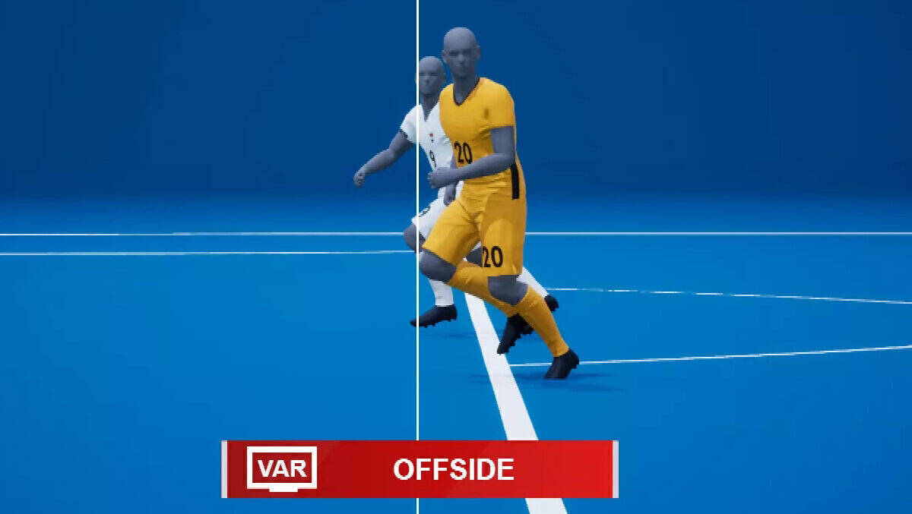
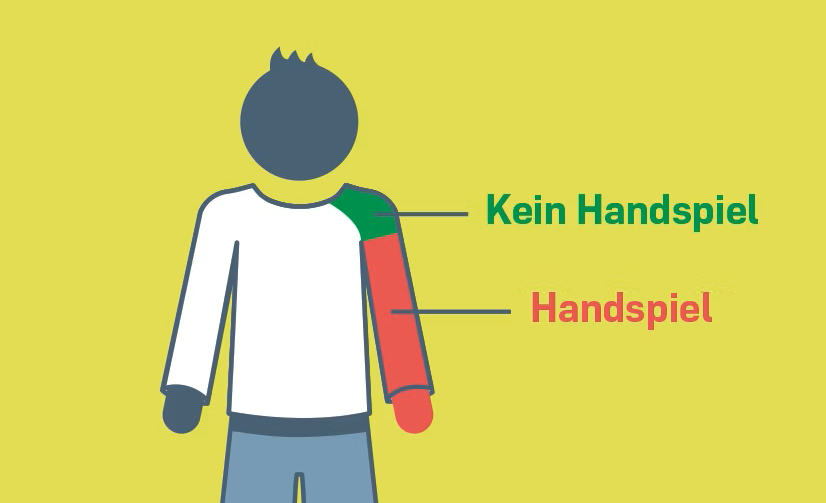

Regeln
Abseits
War das wirklich Abseits oder nicht? Manche Entscheidungen sind so knapp, dass sie für Diskussionen sorgen.
Handspiel
Handspiel – Angelegt oder nicht? Ob ein Handspiel gepfiffen wird, sorgt oft für Diskussionen.
Tor
Das war knapp – zählt das Tor jetzt oder nicht? Im Fussball gibt es genaue Regeln, die entscheiden, ob ein Treffer gültig ist.